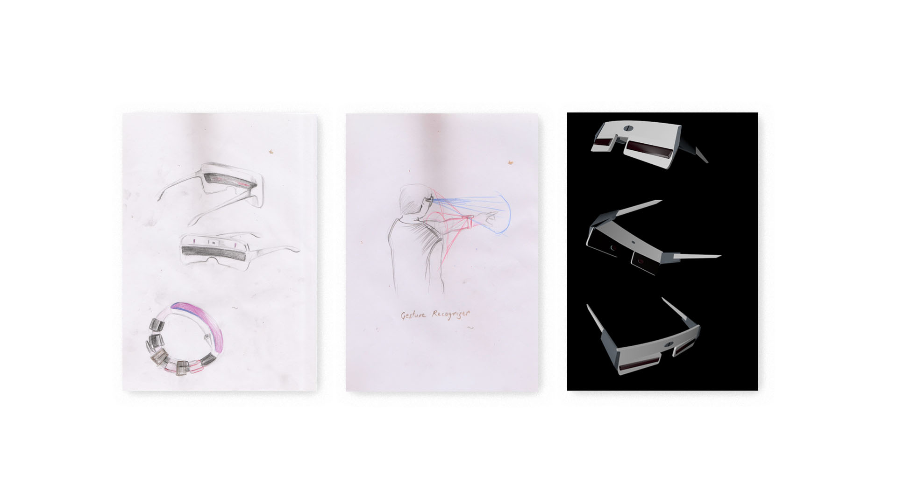
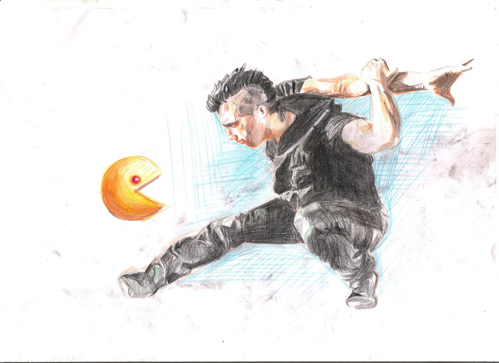
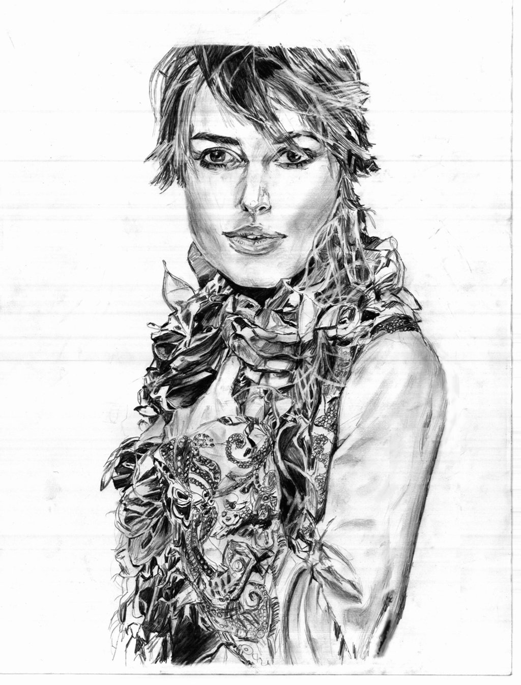
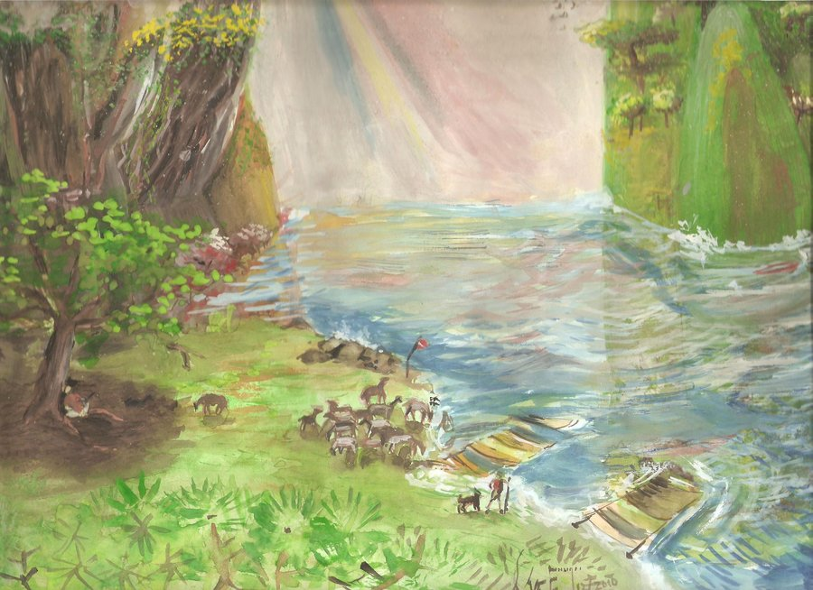
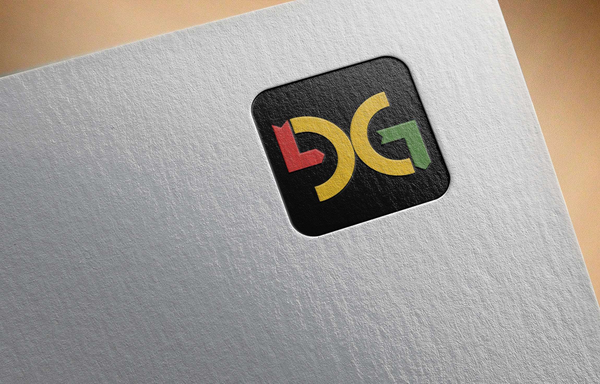
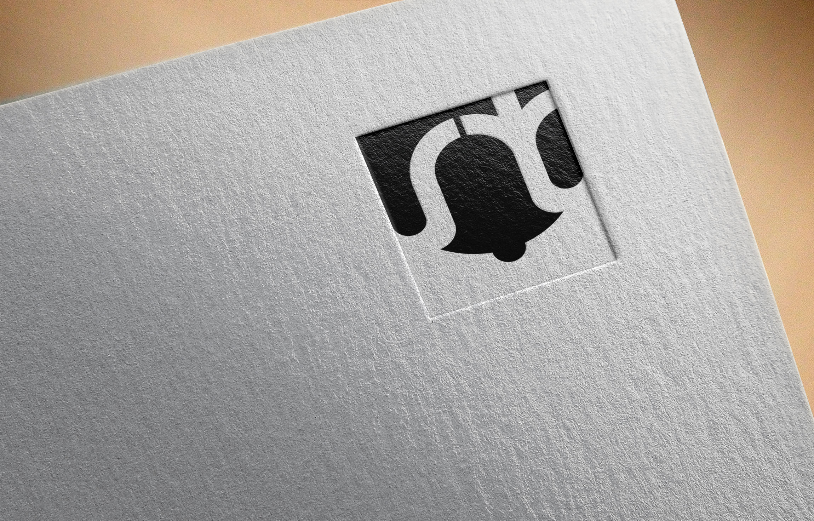
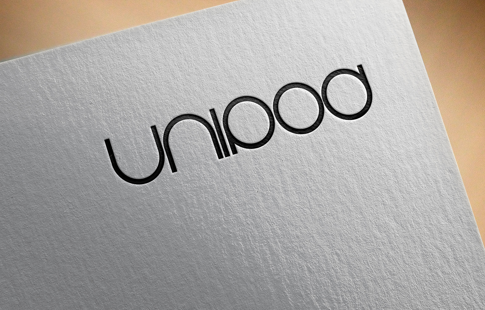

Hi! Besides Product Design, I am learning ART and now trying to find a path for me.
I am available on
Email · Linkedin · Instagram · Behance · Github · Deviant-art · RMD
More about me
- I am a music enthusiast. I have never missed an opportunity in 'performing arts' in the schools I have attended. Through all these Artforms I seek language that is connected to our minds. Language that we usually don't speak.
- I paint, I sketch. Majorly, I end up sketching human portraits. Most of the time, I empathise with the person I am sketching. .
- I have been an engineering student, software developer, visual artist prior to getting into Indian Institute of Science. Here I actually learned how to do the Research. Personally, I realized the meaning of Art, Science and Design and how are they connected to each other. It made me researcher too.
Some Artwork








